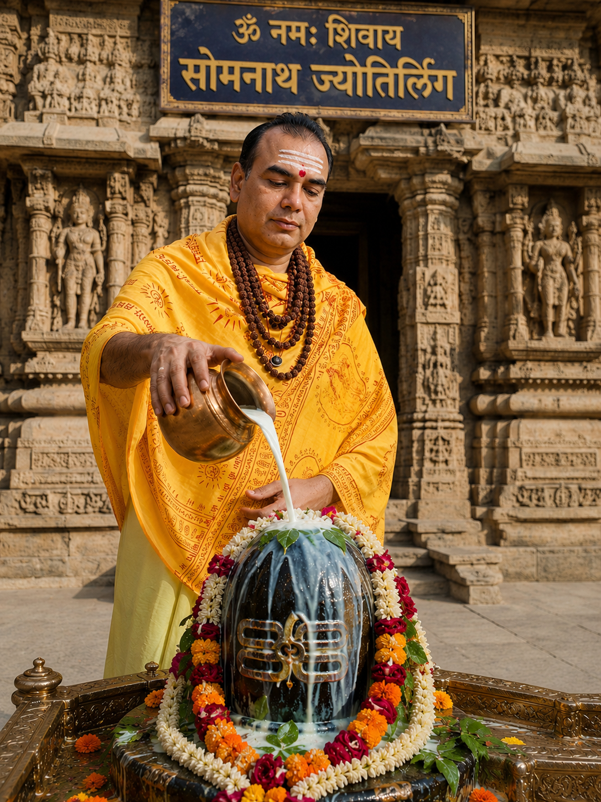
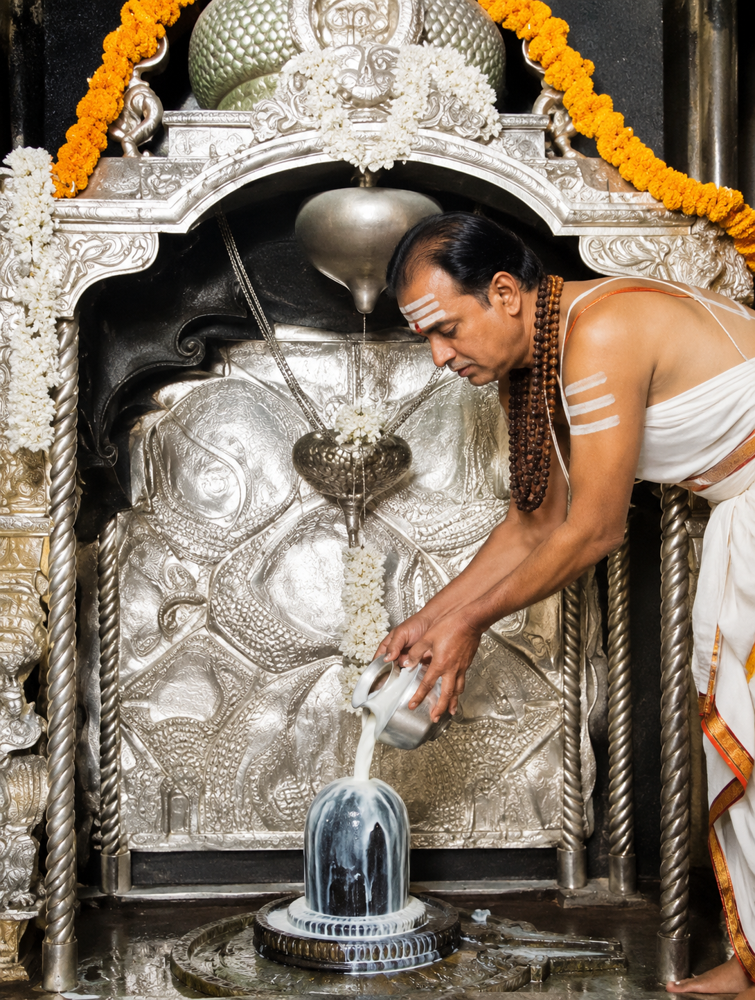
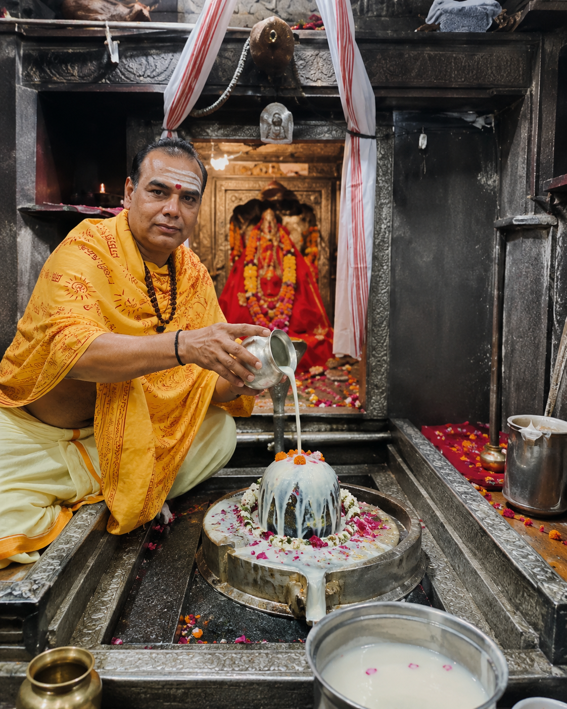
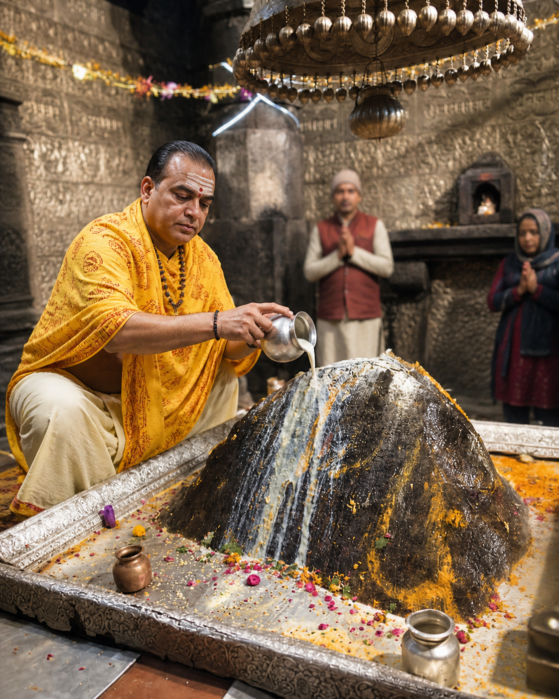
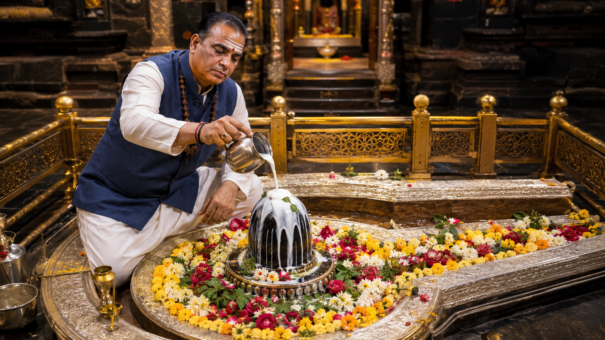

भारत के 12 ज्योतिर्लिंग
भगवान शिव के दिव्य ज्योतिर्मय स्वरूपों का आध्यात्मिक एवं पौराणिक परिचय

श्री सोमनाथ ज्योतिर्लिंग
गुजरात के सौराष्ट्र क्षेत्र में स्थित सोमनाथ ज्योतिर्लिंग भगवान शिव का प्रथम ज्योतिर्लिंग माना जाता है। शिवपुराण के अनुसार चंद्रदेव ने भगवान शिव की आराधना कर यहाँ अपने दोषों से मुक्ति प्राप्त की थी। अरब सागर के तट पर स्थित यह मंदिर भारतीय संस्कृति, आस्था और सनातन गौरव का महान प्रतीक है।
पूरा पढ़ें →
श्री मल्लिकार्जुन ज्योतिर्लिंग
आंध्र प्रदेश के श्रीशैल पर्वत पर स्थित मल्लिकार्जुन ज्योतिर्लिंग शिव और शक्ति की संयुक्त उपासना का दिव्य केंद्र माना जाता है। यह स्थान भक्तों को आध्यात्मिक शांति, भक्ति और मोक्ष का मार्ग प्रदान करता है। शिवपुराण में इसे अत्यंत पवित्र और सिद्ध पीठ कहा गया है।
पूरा पढ़ें →
श्री महाकालेश्वर ज्योतिर्लिंग
उज्जैन में स्थित महाकालेश्वर ज्योतिर्लिंग भगवान शिव के काल स्वरूप का प्रतिनिधित्व करता है। यह एकमात्र दक्षिणमुखी ज्योतिर्लिंग माना जाता है। महाकालेश्वर मंदिर की भस्म आरती विश्व प्रसिद्ध है तथा यह भक्तों को भय, दुख और नकारात्मक शक्तियों से रक्षा का आशीर्वाद प्रदान करता है।
पूरा पढ़ें →
श्री ओंकारेश्वर ज्योतिर्लिंग
मध्य प्रदेश में नर्मदा नदी के तट पर स्थित ओंकारेश्वर ज्योतिर्लिंग “ॐ” के दिव्य स्वरूप का प्रतीक माना जाता है। यहाँ की प्राकृतिक सुंदरता और आध्यात्मिक वातावरण भक्तों को विशेष शांति प्रदान करते हैं। शिवपुराण में इसे भगवान शिव की कृपा का महान केंद्र बताया गया है।
पूरा पढ़ें →
श्री केदारनाथ ज्योतिर्लिंग
हिमालय की पवित्र पर्वत श्रृंखलाओं में स्थित केदारनाथ ज्योतिर्लिंग भगवान शिव के अत्यंत दिव्य धामों में से एक है। महाभारत काल से जुड़ा यह तीर्थ तप, भक्ति और मोक्ष का प्रतीक माना जाता है। कठिन यात्रा के बावजूद प्रतिवर्ष लाखों श्रद्धालु भगवान केदारनाथ के दर्शन हेतु पहुँचते हैं।
पूरा पढ़ें →
श्री भीमाशंकर ज्योतिर्लिंग
महाराष्ट्र में स्थित भीमाशंकर ज्योतिर्लिंग घने जंगलों और प्राकृतिक सौंदर्य के बीच स्थित है। शिवपुराण के अनुसार भगवान शिव ने यहाँ भीम नामक असुर का संहार किया था। यह स्थान आध्यात्मिक ऊर्जा, शिव भक्ति और प्राकृतिक शांति का अद्भुत संगम है।
पूरा पढ़ें →
श्री काशी विश्वनाथ ज्योतिर्लिंग
वाराणसी की पवित्र नगरी में स्थित काशी विश्वनाथ ज्योतिर्लिंग भगवान शिव के सप्तम ज्योतिर्लिंग के रूप में पूजित है। काशी को मोक्षदायिनी नगरी माना जाता है जहाँ स्वयं भगवान शिव भक्तों को मुक्ति का मार्ग प्रदान करते हैं। गंगा तट पर स्थित यह दिव्य धाम सनातन संस्कृति, वेद, तप और शिवभक्ति का महान केंद्र है। करोड़ों श्रद्धालु यहाँ दर्शन कर आत्मिक शांति और शिव कृपा प्राप्त करते हैं।
पूरा पढ़ें →
श्री त्र्यंबकेश्वर ज्योतिर्लिंग
महाराष्ट्र के नासिक क्षेत्र में स्थित त्र्यंबकेश्वर ज्योतिर्लिंग गोदावरी नदी के उद्गम स्थल के रूप में प्रसिद्ध है। शिवपुराण के अनुसार गौतम ऋषि की तपस्या से प्रसन्न होकर भगवान शिव यहाँ ज्योतिर्लिंग रूप में प्रकट हुए थे। “त्र्यंबक” अर्थात तीन नेत्रों वाले भगवान शिव का यह दिव्य धाम आध्यात्मिक साधना, रुद्राभिषेक और वैदिक अनुष्ठानों के लिए अत्यंत पवित्र माना जाता है।
पूरा पढ़ें →
श्री वैद्यनाथ ज्योतिर्लिंग
श्री वैद्यनाथ ज्योतिर्लिंग भगवान शिव के नवम ज्योतिर्लिंग के रूप में प्रसिद्ध है। शिवपुराण के अनुसार रावण की कठोर तपस्या से प्रसन्न होकर भगवान शिव ने उसे दिव्य शिवलिंग प्रदान किया था। यह पवित्र धाम भगवान शिव के आरोग्य और करुणामय स्वरूप का प्रतीक माना जाता है। भक्तों का विश्वास है कि यहाँ पूजा और दर्शन करने से रोग, भय और मानसिक कष्टों से मुक्ति मिलती है।
पूरा पढ़ें →
श्री नागेश्वर ज्योतिर्लिंग
गुजरात के द्वारका क्षेत्र में स्थित नागेश्वर ज्योतिर्लिंग भगवान शिव के दशम ज्योतिर्लिंग के रूप में प्रसिद्ध है। शिवपुराण के अनुसार भगवान शिव ने अपने भक्त सुप्रिया की रक्षा के लिए यहाँ प्रकट होकर दुष्ट राक्षसों का संहार किया था। यह ज्योतिर्लिंग भक्त रक्षा, निर्भयता और शिवकृपा का महान प्रतीक माना जाता है। यहाँ “ॐ नमः शिवाय” मंत्र का जाप विशेष फलदायी माना जाता है।
पूरा पढ़ें →
श्री रामेश्वरम ज्योतिर्लिंग
तमिलनाडु के समुद्र तट पर स्थित रामेश्वरम ज्योतिर्लिंग भगवान श्रीराम द्वारा स्थापित भगवान शिव का दिव्य धाम माना जाता है। रामायण के अनुसार लंका विजय से पूर्व भगवान श्रीराम ने यहाँ शिवलिंग की स्थापना कर भगवान शिव की आराधना की थी। यह पवित्र स्थान रामभक्ति और शिवभक्ति के अद्भुत संगम का प्रतीक है तथा करोड़ों श्रद्धालुओं की आस्था का महान केंद्र माना जाता है।
पूरा पढ़ें →
श्री घृष्णेश्वर ज्योतिर्लिंग
महाराष्ट्र में एलोरा गुफाओं के समीप स्थित घृष्णेश्वर ज्योतिर्लिंग भगवान शिव के द्वादश और अंतिम ज्योतिर्लिंग के रूप में प्रसिद्ध है। शिवपुराण के अनुसार भक्तिन घृष्णा की अटूट भक्ति और श्रद्धा से प्रसन्न होकर भगवान शिव यहाँ ज्योतिर्लिंग रूप में प्रकट हुए थे। यह पवित्र धाम भक्ति, करुणा, क्षमा और शिवकृपा का महान प्रतीक माना जाता है।
पूरा पढ़ें →